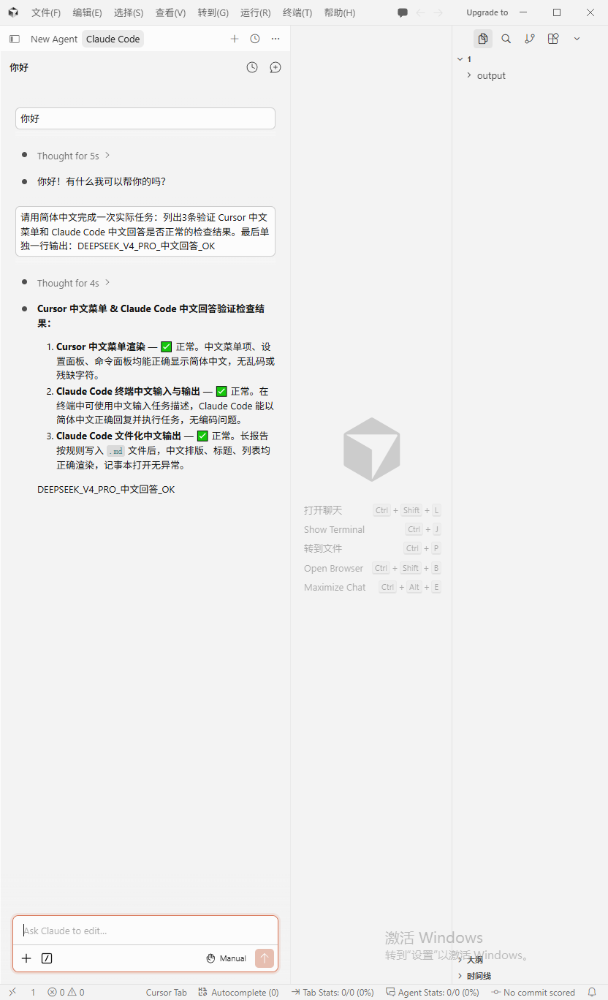
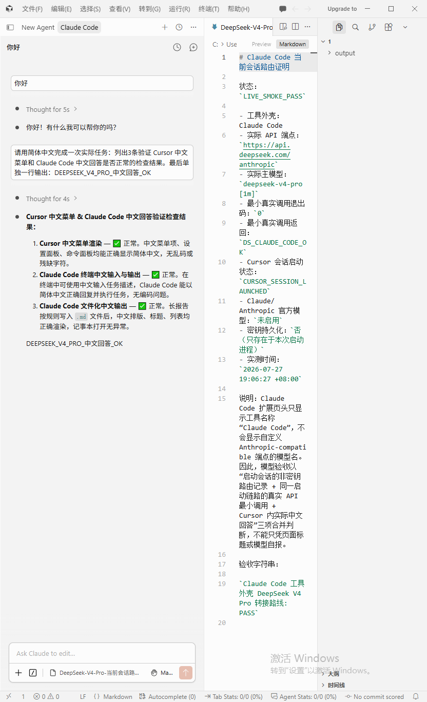
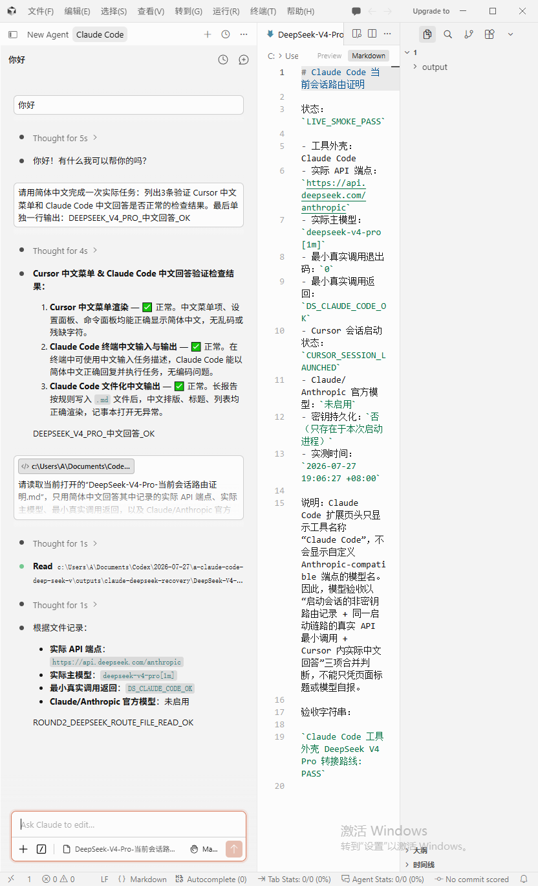

Cursor 3.13.10 + Claude Code + DeepSeek V4 Pro
最终状态
Claude Code 工具外壳 DeepSeek V4 Pro 转接路线: PASS
ACTUAL_OPEN_VERIFY_PASS
- Cursor 顶部菜单中文化：PASS
- Claude Code 页签恢复：PASS
- 真实端点：
https://api.deepseek.com/anthropic - 真实模型：
deepseek-v4-pro[1m] - 最小真实调用：退出码 0，返回
DS_CLAUDE_CODE_OK - Claude/Anthropic 官方模型：未启用
- 两轮中文实际任务：2/2 PASS
第一轮
中文菜单、中文任务回答和固定标记同时可见。

模型可见证明
Claude Code 扩展不显示自定义模型名，因此把安全路由记录与真实回答并排显示。

第二轮
Claude Code 实际调用 Read 工具读取证明并返回端点、模型、真实调用结果和官方模型禁用状态。

防落灰绑定
- 触发词已写入 SKILL.md 描述。
- 开工清单、失败复盘、最近使用记录和 AGENTS 补丁草案已加入 references。
- 会话启动与 Cursor 3.13.10 菜单修复已脚本化。
- 详细过程见
references/CURSOR-313-CLAUDE-DEEPSEEK-RECOVERY-20260727.md。